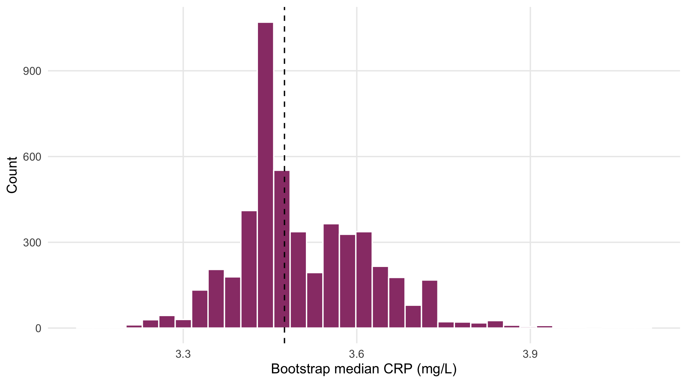
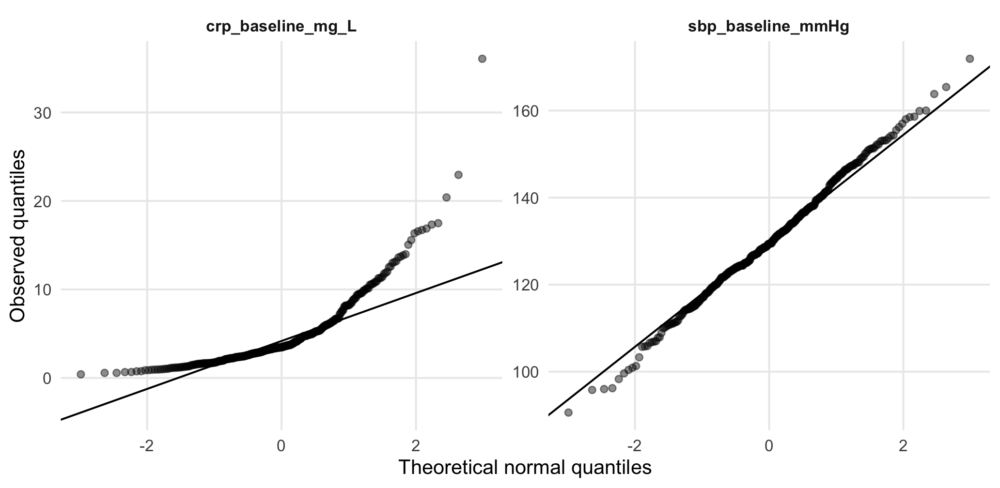

The nonparametric bootstrap approximates a sampling distribution by repeatedly sampling with replacement from the observed sample and recalculating the statistic.
For a statistic \(\hat\theta\), bootstrap replicates \(\hat\theta_1^*,\ldots,\hat\theta_B^*\) give an estimated standard error
\[ \widehat{SE}_{boot}=SD(\hat\theta_1^*,\ldots,\hat\theta_B^*). \]
B <- 5000;
crp_med <- median(crp);
boot_med <- replicate(B, median(sample(crp, replace=TRUE)))
boot_ci <- quantile(boot_med, c(.025,.975));
tibble(estimate=crp_med, bootstrap_SE=sd(boot_med), lower=boot_ci[1], upper=boot_ci[2]) |>
kbl(digits=3, caption="Bootstrap percentile interval for the baseline CRP median")| estimate | bootstrap_SE | lower | upper |
|---|---|---|---|
| 3.475 | 0.118 | 3.32 | 3.74 |
ggplot(tibble(estimate=boot_med), aes(estimate)) +
geom_histogram(bins=35, fill="#9A3E76", colour="white") +
geom_vline(xintercept=crp_med, linetype=2) +
labs(x="Bootstrap median CRP (mg/L)", y="Count")
Figure 4.1: Bootstrap distribution of the baseline CRP median.
Resampling should preserve the original study design. Paired observations are resampled together, clustered data are resampled by cluster, and randomized trials should follow the original randomization scheme. Otherwise, uncertainty estimates may be misleading.
The bootstrap is not a remedy for an extremely small or unrepresentative sample. Resampling can approximate the empirical sampling distribution only from information already present in the observed data; it cannot manufacture unobserved tails, subgroups, or biological heterogeneity (Efron and Tibshirani 1993).
A z-score expresses a value in standard-deviation units:
\[ z_i=\frac{x_i-\bar x}{s}. \]
A normal Q–Q plot compares empirical quantiles with theoretical normal quantiles. Departures in the center, tails, and asymmetry are more informative than a single normality-test p-value.
qq_dat <- dat |>
dplyr::select(sbp_baseline_mmHg, crp_baseline_mg_L) |>
pivot_longer(everything(), names_to="variable", values_to="value")
ggplot(qq_dat, aes(sample=value)) +
stat_qq(alpha=.45, na.rm=TRUE) +
stat_qq_line(na.rm=TRUE) + facet_wrap(~variable, scales="free") +
labs(x="Theoretical normal quantiles", y="Observed quantiles")
Figure 4.2: Q–Q plots contrast approximately symmetric SBP with strongly right-skewed CRP.
When the population standard deviation is unknown and estimated from the sample, the standardized mean follows Student’s \(t\) distribution.
It has heavier tails than the normal distribution, especially for small samples, reflecting the extra uncertainty from estimating the standard deviation.
c(
t_975_df10 = qt(p = 0.975, df = 10),
t_975_df50 = qt(p = 0.975, df = 50),
normal_975 = qnorm(p = 0.975),
P_T20_le_2 = pt(q = 2, df = 20)
)
#> t_975_df10 t_975_df50 normal_975 P_T20_le_2
#> 2.2281 2.0086 1.9600 0.9704Here, p is the cumulative probability, df is degrees of freedom, and q is the t-value at which the cumulative probability is evaluated.
The binomial distribution models the number of successes in \(n\) independent trials when each trial has the same probability of success, \(p\).
\[ X\sim\operatorname{Binomial}(n,p),\qquad E(X)=np,\quad Var(X)=np(1-p). \]
c(
P_exactly_20 = dbinom(x=20, size=50, prob=.40),
P_at_most_20 = pbinom(q=20, size=50, prob=.40)
)
#> P_exactly_20 P_at_most_20
#> 0.1146 0.5610Here, dbinom() gives the probability of exactly 20 successes, whereas pbinom() gives the cumulative probability of 20 or fewer successes.
The binomial distribution is widely used for binary outcomes and forms the basis of binomial regression models.
The Poisson distribution models the number of events occurring in a fixed time, area, or other interval when events occur independently at an approximately constant rate.
\[ P(Y=y)=\frac{e^{-\lambda}\lambda^y}{y!},\quad y=0,1,2,\ldots \]
lambda <- mean(dat$ae_count_12w, na.rm=TRUE)
c(
mean_count = lambda,
P_exactly_2 = dpois(x=2, lambda=lambda),
P_at_most_2 = ppois(q=2, lambda=lambda)
)
#> mean_count P_exactly_2 P_at_most_2
#> 0.3556 0.0443 0.9942x=2 in dpois() asks for the probability of exactly 2 events, \(P(Y=2)\).
q=2 in ppois() asks for the cumulative probability of 2 or fewer events, \(P(Y\le2)\).
lambda is the expected or average number of events.
The exponential and Weibull distributions model time until an event occurs.
The exponential model assumes a constant hazard over time, whereas the Weibull model allows the hazard to increase or decrease over time.
The Cox proportional hazards model is different: it does not assume a specific survival-time distribution. Instead, it models how predictors affect the hazard of an event. It assumes that the hazard ratio between groups remains approximately constant over time.
Bootstrap and permutation methods both use repeated resampling, but they answer different questions.
Bootstrap is mainly used to quantify uncertainty in an estimate, whereas permutation is mainly used for hypothesis testing.
set.seed(123)
boot_mean <- replicate(2000, mean(sample(dat$sbp_baseline_mmHg, replace=TRUE), na.rm=TRUE))
tibble(
observed_mean=mean(x),
bootstrap_mean=mean(boot_mean),
bootstrap_SE=sd(boot_mean),
CI_lower=quantile(boot_mean,.025),
CI_upper=quantile(boot_mean,.975)
)
#> # A tibble: 1 × 5
#> observed_mean bootstrap_mean bootstrap_SE CI_lower CI_upper
#> <dbl> <dbl> <dbl> <dbl> <dbl>
#> 1 NA 130. 0.715 129. 131.Each bootstrap sample has the same size as the original sample and is drawn with replacement. Repeating this many times produces a bootstrap distribution of the mean. Its standard deviation estimates the standard error.
d <- dat |> filter(treatment_arm %in% c("Control","Drug_A")) |>
mutate(sbp_change=sbp_week12_mmHg-sbp_baseline_mmHg) |>
drop_na(treatment_arm, sbp_change)
obs_diff <- with(d, mean(sbp_change[treatment_arm=="Drug_A"]) -
mean(sbp_change[treatment_arm=="Control"]))
set.seed(123)
perm_diff <- replicate(2000, {
gp <- sample(d$treatment_arm)
mean(d$sbp_change[gp=="Drug_A"]) - mean(d$sbp_change[gp=="Control"])
})
p_value <- (sum(abs(perm_diff)>=abs(obs_diff))+1)/(length(perm_diff)+1)
c(observed_difference=obs_diff, permutation_p_value=p_value)
#> observed_difference permutation_p_value
#> -4.8312111 0.0004998In each permutation, the SBP changes remain fixed while the treatment labels are shuffled. This generates the distribution expected under the null hypothesis.
The permutation p-value is the proportion of permuted differences that are at least as extreme as the observed difference:
\[ p= \frac{\text{number of permuted statistics greater than or equal the observed statistic}} {\text{number of permutations}}. \]
A small p-value indicates that the observed group difference would be uncommon under the null hypothesis.